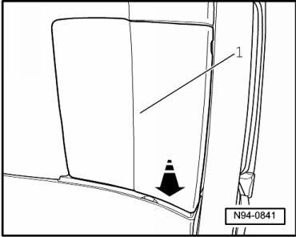
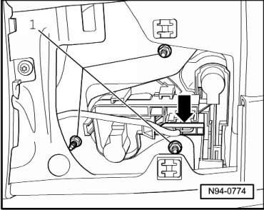

Rear Lid Tail Lamps
Tail Lamps
Rear Lid Tail Lamps
Removing
- Switch off ignition, switch off all electrical consumers and remove ignition key.
- Open rear lid.
- Clip service cover - 1 - out of locking mechanisms and pull off cover in - direction of arrow -.

- Disconnect connector - arrow -.

- Remove mounting nuts - 1 - and remove housing for tail lamp assembly.
Installing
Install in reverse order of removal, noting the following:
- Bring housing for tail lamp assembly into correct position to the body by hand, hold firmly and then tighten mounting nuts.
- Tighten the nuts to the tightening specification --> [ Tail Lamps ] Tail Lamps.
- Check gap dimension of tail lamp assembly --> [ Tail Lamp Gap Dimensions ] Tail Lamp Gap Dimensions.